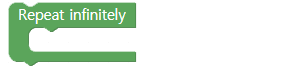
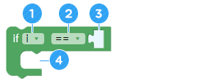
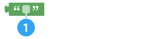

Membuat robot berjalan di lintasan
• Buatlah gerakan yang Anda inginkan menggunakan Asome Controller.
• Mainkan balapan AsomeBot yang berjalan di trek/lintasan.
A. AsomeBot dikendalikan dari jarak jauh untuk membuat gerakan yang Anda inginkan
Dengan Asome Controller, kita dapat membuat dan menggunakan gerakan baru yang kita inginkan.
B. Buat robot yang berjalan di lintasan
Di kelas ini, kita akan menggabungkan gerakan Asomebot untuk mengelilingi trek dengan cepat dan berjalan dan kemudian melakukan lomba.

A. Ubah ke mode titik akses/acces point (grup [INTERNET])
Beri nama AsomeBot Anda yang akan dikendalikan oleh ponsel cerdas.

① Berikan AsomeBot nama yang Anda inginkan. Hanya bahasa Inggris dan angka yang dapat digunakan untuk nama Asomebot.
B. Buka/open UDP socket (grup[INTERNET])
Buka port untuk AsomeBot untuk berkomunikasi melalui Internet.

① Nomor port.Gunakan sebagaimana adanya tanpa modifikasi
C. Baca Pesan/Read message UDP socket (grup [INTERNET])
Baca pesan dari smartphone.

D. Ulangi tanpa batas/Repeat infinitely (grup [ADVANCE])
[Repeat infinitely] membuat blok yang dibundel ke dalamnya untuk terus berjalan berurutan tanpa henti.
Kali ini, Blok ini digunakan oleh aplikasi telepon pintar untuk menunggu pesan dikirim, dan kemudian menjalankan perintah yang sesuai pesan saat diminta.
E. Pengulangan/Repeat (grup [ADVANCE])
Blok ini memungkinkan AsomeBot mengulangi gerakan tertentu
atau sekelompok gerakan sebanyak yang Anda inginkan.

① Masukkan berapa kali untuk mengulang suatu gerakan
② Tambahkan blok untuk mengulang.
F. Jika/if ([ADVANCE] group)
Blok [If] membuat blok yang dibundel ke dalamnya untuk dijalankan, ketika itu sesuai dengan kondisinya. Jika tidak sesuai dengan kondisi, blok di belakang [If] yang dijalankan.
① Masukkan variabel yang digunakan untuk pernyataan bersyarat. Nilai dasar adalah ' I '
② Pilih tanda ketidaksetaraan untuk membandingkan dengan kondisi
③ Masukkan nilai referensi yang akan digunakan untuk kondisi tersebut. Saat ini, Anda harus menambahkan blok nilai bersyarat.
④ Tambahkan blok untuk dijalankan ketika kondisi terpenuhi.
G. Nilai huruf (grup [ADVANCE])
Digunakan untuk mewakili huruf yang dimasukkan, bukan variabel atau angka.
① Masukkan huruf yang ingin Anda gunakan sebagai syarat
H. Pesan yang dapat Anda kirim dengan Asome Controller
Anda dapat membuat AsomeBot menekan berbagai tombol Asome Controller.

① Tombol panah adalah untuk mengirim pesan F, B, L, R sehingga Asomebot bergerak ke arah yang sesuai.
② Siaga/Attention: Tombol ini mengirim pesan H untuk Asomebot untuk berdiri tegak.
③ Kirim nomor 1 hingga 12 dalam pesan untuk melakukan gerakan yang diinginkan
① Buat program yang jika Anda menyentuh tombol "1" pada Asome Controller, AsomeBot akan belok kiri satu langkah dan maju satu langkah dan mengulangi kedua gerakan ini tiga kali.
② Apa saja gerakan tarian yang bagus untuk digunakan dengan perintah rotasi ketika Asomebot berkeliling trek?
A. Aturan main
① Game diikuti oleh dua AsomeBots yang memutar lintasan dan dimenangkan oleh robot yang mencapai garis finish terlebih dahulu.
② AsomeBot dikendalikan dengan Asome Controller (Dapat digunakan dengan menyimpan untuk balapan pada fungsi treknya sendiri pada tombol dari 1 hingga 12)
③ Dapat pindah ke trek lain sambil berlari
④ Jika Asomebot melintasi garis terdalam trek, ia dinyatakan keluar/diskualifikasi.
B. Algoritma
① Dalam suatu lomba lintasan, adalah menguntungkan untuk berlari di lintasan dalam. Gerakan apa yang bisa AsomeBotlakukan agar pindah ke trek dalam dengan cepat?

② Jika Anda menggunakan perintah belok ke kiri, AsomeBot berbelok di tempatnya sehingga jarak ke depan sangat pendek. Bagaimana Anda bisa membuat gerakan yang bisa berputar di sepanjang trek dan terus maju?
C. Mainkan game
Mainkan game yang berlari kencang di trek dan kembali ke garis finish.